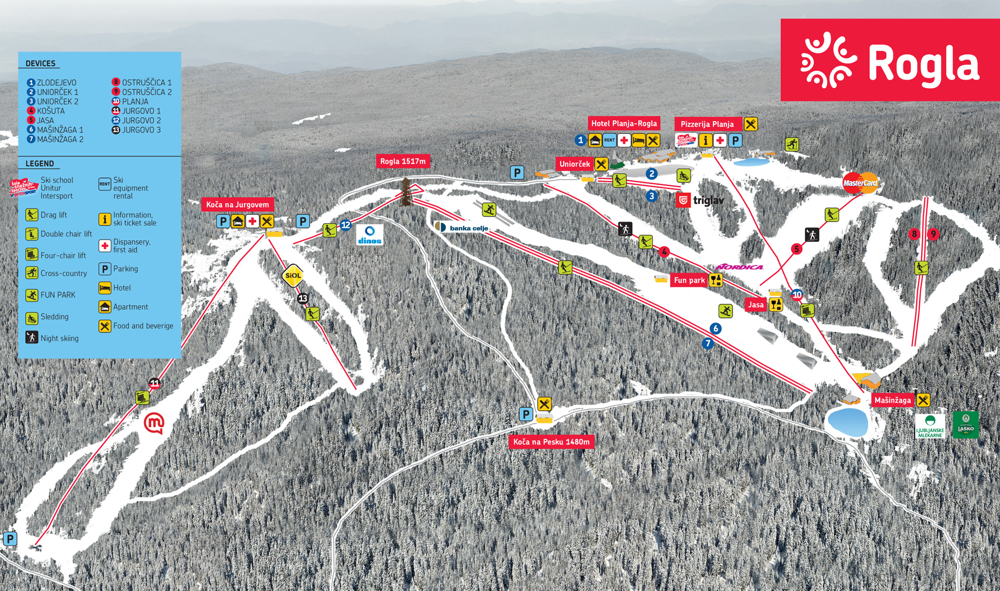
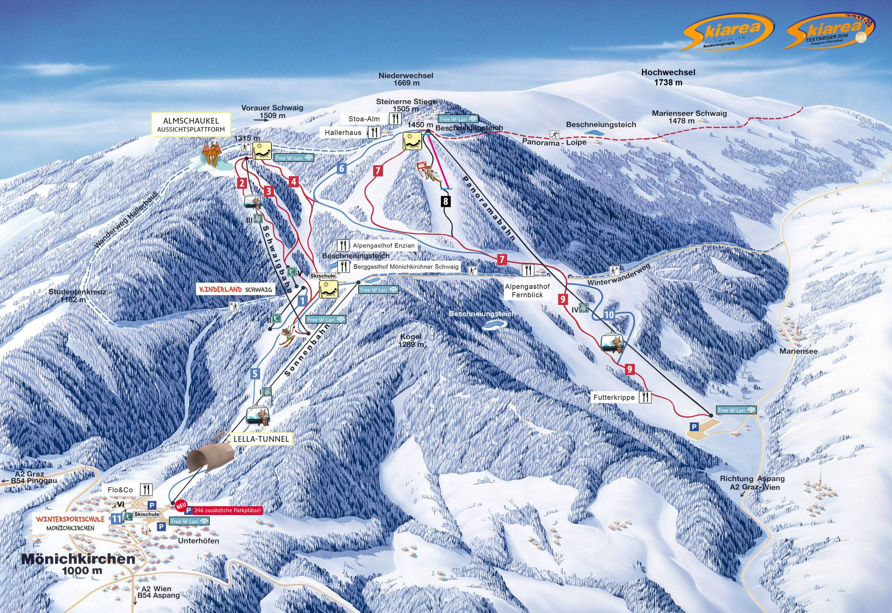
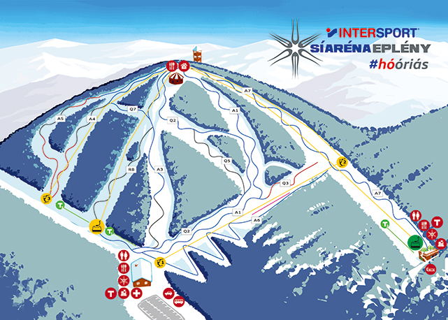

Divinyi-Zsoldos Tamás
portfólió
Rövid bemutatkozó  Síterep ajánlás kezdőknek
Síterep ajánlás kezdőknek  Munka és célok
Munka és célok  Elérhetőség
Elérhetőség 
Rogla-Szlovénia: Budapesstől nagyjából 390 km-re helyezkedik el a Roglai síterep. Kezdők számára jó döntés lehet, mivel a hely rengeteg lehetőséget kínál a tanulóknak.

Mönichkirchen-Mariensee-Ausztria: A Budapesttől kevesebb, mint 300 km-re található síterep az egyik legközelebbi síelőhely Ausztriában. Sok lehetőség van a tanulók számára, emellett nagyon szép az itteni táj is.

Eplény-Magyarország: Ha pedig a lehető legkevesebbet szeretnénk utazni vagy kipróbálni a hazai sípályákat, akkor a Budapesttől 120 km-re elhelyezkedő éplényi síterep is jó döntés lehet.
